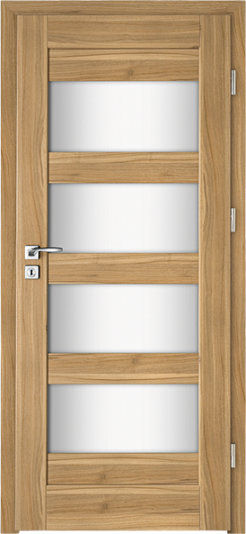
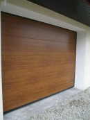
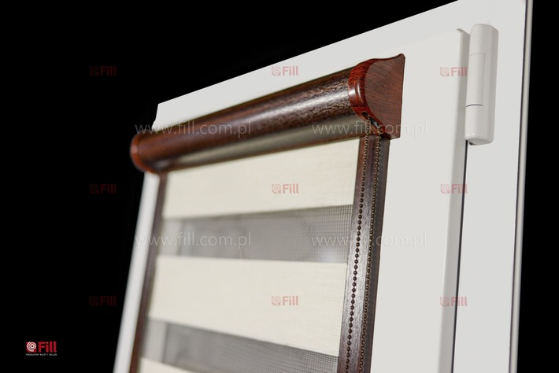

Okna i drzwi w szerokim wyborze
WOL-BUD to firma Wojciecha Wolańskiego, założona w 1995 roku. Oferuje okna PCV i aluminiowe, drzwi, bramy garażowe, rolety, parapety, doradztwo i montaż.
Zamontujemy u Ciebie
W trosce o Państwa wygodę i bezpieczeństwo inwestycji zapewniamy profesjonalny montaż w Tarnowie, Radłowie i okolicznych miejscowościach.
WOL-BUD to firma Wojciecha Wolańskiego, założona w 1995 roku. Oferujemy okna PCV i aluminiowe, drzwi, bramy garażowe, rolety, parapety, doradztwo i montaż. Dobrze znamy produkty, które sprzedajemy. Montujemy dokładnie i dbamy o szczegóły.
Specjalizujemy się w energooszczędnym ciepłym montażu warstwowym z zastosowaniem folii paroszczelnych i paroprzepuszczalnych ProTape oraz termoparapetów Klinar.
„Okna bardzo dobrej jakości. Fachowa obsługa, potrafią doradzić, montaż bez żadnych problemów.”
Potrzebujesz bezpłatnego pomiaru? Zadzwoń: 534 091 021
- 01Pomiar i doradztwoZapewniamy bezpłatny i niewiążący pomiar, doradztwo i wycenę na miejscu budowy lub w naszych salonach.
- 02Dobór stolarkiOferujemy okna energooszczędne Domel, drzwi Wikęd, bramy garażowe, rolety i parapety.
- 03Ciepły montażWłasne wykwalifikowane ekipy montażowe z wieloletnim doświadczeniem w szczelnym montażu trójwarstwowym.
- 04Serwis i gwarancjaZapewniamy pełny serwis gwarancyjny i pogwarancyjny, regulację okuć oraz wymianę części.
„Firma z wieloletnim doświadczeniem i super ekipa. Polecam serdecznie”
Co mówią nasi klienci
-
★★★★★
Okna bardzo dobrej jakości. Fachowa obsługa, potrafią doradzić, montaż bez żadnych problemów.
-
★★★★★
Firma z wieloletnim doświadczeniem i super ekipa. Polecam serdecznie
-
★★★★★
Serdecznie polecam ta firmę, dokładne wykonanie ,pełna profesjonalnosc . Jestem zadowolona montażem okiem polecam każdemu .
-
★★★★★
Polecam firmę Wol-bud. Zamawiałam okna, rolety, drzwi i bramę wszystko dostarczone na czas. Duży wybór drzwi, konkurencyjne ceny, bardzo dobry kontakt z klientem Pan Robert dołożył starań żeby jak najlepiej doradzić. Zgłaszałam drobne usterki i wszystko zostało wyregulowane i naprawione. Profesjonalny montaż 🙂
-
★★★★★
Serdecznie polecam firmę , wykonali panowie u nas okna drzwi rolety, wszystko na pełnym profesjonalizmie 👏🤝 trzymają porządek na miejscu pracy, punktualni i kultura na pełnym poziomie 💪 panowie jechali do nas 150km na montaż 🙈 ale montaż i kontakt wzorowy!…
-
★★★★★
Firma i jej pracownicy z profesjonalnym podejściem do klienta i wykonywanych usług ! Wszystko zgodnie z zamówieniem i umową. Punktualnie i dokładnie wykonane. Przed podpisaniem umowy fachowe porady. Polecam.
-
★★★★★
Firma Wol-Bud fachowa obsługa i doradztwo na najwyższym poziomie, sprawny, szybki i terminowy montaż. Wystawiamy wiarygodny komentarz po 6 latach użytkowania od montażu. Okna po 6 latach od montażu szczelne i pracują bez problemów ,nie wspominając o bramie garażowej, roletach zewnętrznych ,drzwiach zewnętrznych i wewnętrznych które również zakupiliśmy w firmie Wol-Bud. Serwis na najwyższym poziomie w razie potrzeby. Z czystym sumieniem polecamy firmę Wol-Bud oraz wyroby budowlane które polecają i montują.
-
★★★★★
Polecam. Profesjonalne podejście do tematu. Bardzo szybka reakcja na zgłoszenie zaciętej bramy garażowej. Serwis był w 20 min od zgłoszenia. Trudno dostępne części załatwione błyskawicznie.
Czego szukasz?
Wybierz kategorię produktów lub sprawdź nasze usługi montażowe i serwisowe.
Okna PCV firmy Domel
Okna energooszczędne i pasywne Gealan oraz Veka

Drzwi zewnętrzne
Drzwi stalowe Wikęd o wysokiej izolacyjności i bezpieczeństwie

Drzwi wewnętrzne
Drzwi ramiakowe okleinowane Intenso, Erkado, DRE

Bramy garażowe
Bramy segmentowe, rolowane i uchylne z automatyką
Stolarka aluminiowa
Okna, drzwi, fasady szklane oraz ogrody zimowe

Rolety
Rolety zewnętrzne adaptacyjne, podtynkowe, wewnętrzne i plisy

Parapety i blaty
Aglomarmur, granit, marmur naturalny, parapety PCV i stalowe
Moskitiery
Moskitiery ramkowe okienne i otwierane drzwiowe
Usługi montażowe i serwisowe
Pomiar, doradztwo i wycena
Zapewniamy bezpłatny i niewiążący pomiar, doradztwo i wycenę na miejscu budowy lub w naszych salonach sprzedaży. Potrafimy zapropo...
Dowiedz się więcej ↗ 02 USŁUGACiepły montaż
Dla osób ceniących energooszczędność oraz wysoką jakość okien i montażu proponujemy okna firmy Petecki wraz z ciepłym montażem z w...
Dowiedz się więcej ↗ 03 USŁUGASerwis
Prowadzimy pełny serwis okien i drzwi: – regulacja poprawiająca pracę i szczelność okien – naprawa lub wymiana okuć, zamków, zawia...
Dowiedz się więcej ↗ 04 USŁUGAKompleksowa obsługa inwestycji
Wieloletnie doświadczenie przy obsłudze przetargów i inwestycji prywatnych oraz bogata oferta produktowa pozwala nam zaopatrzyć pr...
Dowiedz się więcej ↗ 05 USŁUGAPrace wykończeniowe i murarskie
Wykonujemy wszelkie prace związane z poszerzaniem, wycinaniem czy zamurowaniem otworów okiennych czy drzwiowych, jak również obrób...
Dowiedz się więcej ↗ 06 USŁUGAUkładanie kostki brukowej
Oferujemy usługę montażu kostki brukowej oraz chodników dla instytucji takich, jak szkoły, urzędy czy spółdzielnie mieszkaniowe....
Dowiedz się więcej ↗ 07 USŁUGADaszki poliwęglanowe
Prowadzimy sprzedaż i montaż daszków poliwęglanowych dla osób prywatnych, firm i instytucji. Zapewniamy bezpłatną wycenę i doradzt...
Dowiedz się więcej ↗„Serdecznie polecam ta firmę, dokładne wykonanie ,pełna profesjonalnosc . Jestem zadowolona montażem okiem polecam każdemu .”
Partnerzy
Chętnie doradzimy
Zadzwoń albo zajrzyj do naszych salonów sprzedaży w Tarnowie i Radłowie. Umówimy pomiar i odpowiemy na Twoje pytania.
- E-mail:biuro@wol-bud.com.pl
- Czynne:Poniedziałek – piątek 09:00–17:00
- Soboty:09:00–13:00 (Tarnów i Radłów)